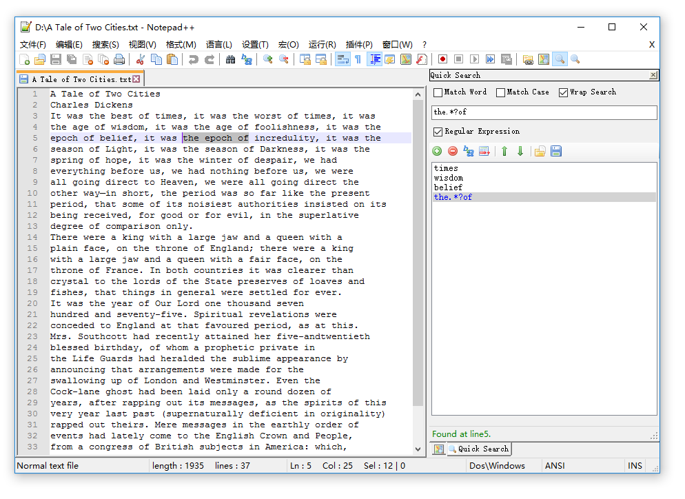
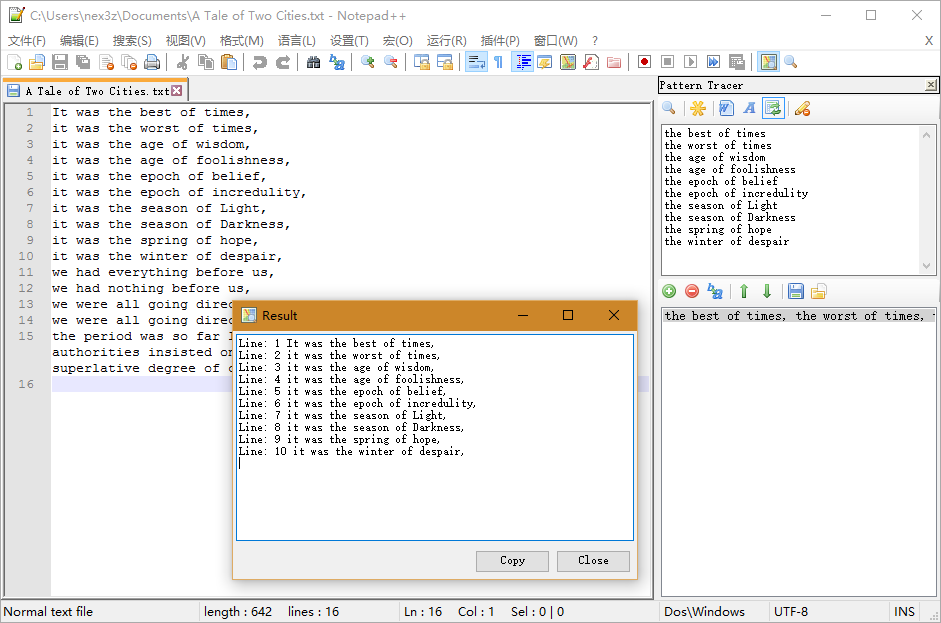

Download
Description
NppLogGazer is a Notepad++ plugin with fancy search features, providing fast and convenient searching especially for log analysis. It contains two separate plugins: QuickSearchPanel for managing and searching frequently used keywords, and PatternTracer for tracking keywords sequence.
How to install
Copy the NppLogGazer.dll to the plugins folder in your Notepad++ directory.
Important Note: NppQuickSearchPanel only support the Unicode version of Notepad++.
QuickSearchPanel

Features
- Save your frequently used keywords in a list.
- Click on keyword in the list to search.
- Provide multiple search options and regular expression support.
How to use
Open up Notepad++, click the  Show QuickSearchPanel button in the toolbar, or use menu Plugins / NppLogGazer / Show QuickSearchPanel.
Show QuickSearchPanel button in the toolbar, or use menu Plugins / NppLogGazer / Show QuickSearchPanel.
- Input keyword in the text box. Select
 Regular Expression if it is a regular expression. Click
Regular Expression if it is a regular expression. Click  Add button to add it to the list.
Add button to add it to the list. -
Click on the keyword in the list to search forward. Shift + Click to search backward. Search options:
 Match Word,
Match Word,  Match Case and
Match Case and  Wrap Search.
Wrap Search. - Ctrl + Click on the keyword to launch Notepad++'s "Find" dialog with selected keyword pasted in "Find what" automatically. (Note: The "Regular expression" in Notepad++'s Find dialog won't be selected automatically, due to lacking of API support.)
- Use
 Delete button to remove the selected keyword. You can also change the order of selected keyword by using
Delete button to remove the selected keyword. You can also change the order of selected keyword by using  Move Up and
Move Up and  Move Down.
Move Down. - Use
 Open.../
Open.../ Save As... to import / export current keywords list.
Save As... to import / export current keywords list. - Use
 Filter to filter given keyword in the list.
Filter to filter given keyword in the list.
PatternTracer

Features
- Build keyword pattern and track them down in the document by one click.
- Save your patterns in a list.
- Provide multiple search options and regular expression support.
How to use
Open up Notepad++, click the  Show PatternTracer button in the toolbar, or use menu Plugins / NppLogGazer / Show PatternTracer.
Show PatternTracer button in the toolbar, or use menu Plugins / NppLogGazer / Show PatternTracer.
- Input pattern in the text box. A pattern is a keyword list. Each keyword takes one line and will be searched in the same order as they are positioned in the list. Select Regular Expression if you use regular expression.
- Select search options: Match Word and Match Case.
- Click
 Search to search the pattern in the current document.
Search to search the pattern in the current document. - Use Add to add current pattern to the list and Delete to remove the selected pattern. You can also change the order of selected pattern item by using Move up and Move down.
- Use Open.../Save As... to import / export current keywords list.
How to build
Build with Visual Studio 2013. If you encounter a "The system cannot find the file specified" error when building the project, add the location of NETFX Tools to your Path environment variable.
For 64-bit system and Visual Studio 2013, the typical location of NETFX Tools is
C:\Program Files (x86)\Microsoft SDKs\Windows\v8.1A\bin\NETFX 4.5.1 Tools
For 32-bit system, the typical location is
C:\Program Files\Microsoft SDKs\Windows\v8.1A\bin\NETFX 4.5.1 Tools
Credits
- NppPlugin.NET.v0.6, the C# Notepad++ plugin template is brought to you by ufo-pu55y.
- The nice toolbar icons come from famfamfam.com, under Creative Commons Attribution 3.0 License.
About Notepad++
Notepad++ is a free (as in "free speech" and also as in "free beer") source code editor and Notepad replacement that supports several languages. Running in the MS Windows environment, its use is governed by GPL License. For more information, please visit the official site.